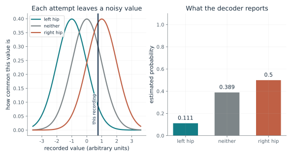
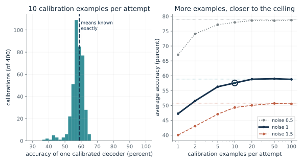
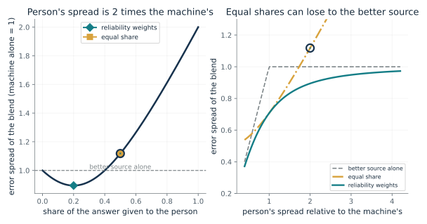
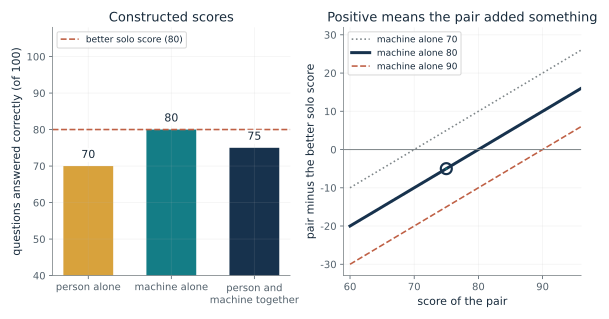
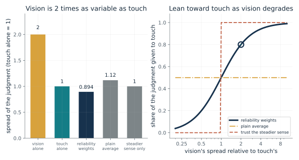

Ask what each source reports and how reliable it is, whether their errors are independent, what the best real alternative is, and whether a claim is a measured result, a drawn comparison or an open question. Work the weights and the comparison by hand before running any simulation, and say what was constructed.
“A person scores 70 out of 100, a tool scores 80, and together they score 75. Did the tool help?”
Use mmi-ch01-making-mind with the companion's AI skill package. The illustrations below also work on their own.
How does a decoder turn a noisy recording into probabilities?
From Chapter 1, A recording is not a command
A recording lands at one value, and each of three attempts (left hip, neither, right hip) would leave a noisy value near its own center. How likely is each attempt?
Each attempt would leave a recorded value near its own center, blurred by noise. Given a recording, the closer a center is, the more weight that attempt gets. Dividing each weight by the total makes the three weights probabilities that add to one. When the noise is large, even a recording sitting on a center leaves the other attempts plausible.
Predict first: If the recording lies exactly midway between the centers for 'neither' (0) and 'right hip' (1), predict what the decoder reports for those two attempts.

Recorded value: 0.75 · Noise (sigma): 1
What happens: At x = 0.5 the two attempts get exactly the same probability, 0.422 each, and the left hip gets 0.155. The decoder gives a graded estimate and not a command, and a tie is allowed.
At recorded value 0.75 with noise 1, the most likely attempt is right hip at probability 0.5. The decoder gives a probability for each attempt and never a command.
- Probability of left hip
- 0.111
- Probability of neither
- 0.389
- Probability of right hip
- 0.5
- Most likely attempt
- right hip
This is the first job mathematics does in the book: it turns messy measurements into an estimate that can guide an action.
The brain recordings were measurements associated with attempted movement; the chapter notes the paper says intention and attempt, not thought.
The decoder is a program that maps measurements to estimates; its probabilities helped set the strength of stimulation.
Show the calculation
Weights for left hip, neither, right hip: e^(-(0.75 - (-1))^2 / 2) = 0.216, e^(-(0.75 - (0))^2 / 2) = 0.755, e^(-(0.75 - (1))^2 / 2) = 0.969. Each probability is its weight divided by the total 1.94.
The equations and symbols
- x
- the recorded value
- mu_k
- the typical value for attempt k: minus 1, 0 and 1 here
- sigma
- how far a recording typically strays from its center (the noise)
- p_k
- the estimated probability of attempt k, assuming the three attempts are equally likely to start
One recorded value, three attempts that start equally likely, and equal noise for each. A real decoder uses many measurements and learned weights.
Check your understanding: With noise 2 instead of 1, does a recording at 1 (the right-hip center) make the right hip more certain or less certain than with noise 1?
Book source: Chapter 1, A recording is not a command. Illustration C01-D01. Formula. A constructed illustration of the chapter's statement that the decoder estimated the probabilities of attempting to flex the left hip, the right hip or neither. The bell-curve model, the centers and the noise are invented here; the study's decoder is built differently and uses several recording sites.
How much calibration data does a decoder need?
From Chapter 1, A recording is not a command
A decoder learns the typical recording for each attempt from examples. How does its accuracy depend on how many examples it saw, and how noisy the recordings are?
The decoder learns where each attempt typically lands by averaging the examples it saw. With few examples, those averages are off by about sigma over the square root of the number of examples, and misplaced centers cause avoidable mistakes. More examples shrink that error, but accuracy can never pass the ceiling set by the noise in single recordings.
Predict first: At noise 1, predict whether 5 examples per attempt are enough to get near the ceiling, or whether you need many more.

Examples per attempt: 10 · Noise (sigma): 1.0
What happens: At noise 1, five examples per attempt averaged about 56 percent against a ceiling of about 59, and a few calibrations did much worse. One example per attempt averages about 47 percent, so the first few examples close most of the gap and later ones add little.
With 10 examples per attempt and noise 1, 400 simulated calibrations averaged 57.6 percent correct, against a ceiling of 58.9 percent. The spread between calibrations is part of the answer: the worst tenth scored 54 percent or less.
- Average accuracy
- 57.6 percent
- Accuracy if the means were known
- 58.9 percent
- Gap to that ceiling
- 1.3 points
- Worst tenth of calibrations
- 54 percent or less
It shows why the study's time spent calibrating, and recalibrating on later days, is part of the mathematics and not just housekeeping.
The person supplied the examples by attempting each movement; the chapter says Oskam supplied the examples and the machine found the pattern.
The decoder estimates its own parameters from examples, and the examples it saw limit how well it can estimate.
Show the calculation
Each calibration estimates a mean from 10 noisy examples, whose own error has spread 1 / sqrt(10) = 0.316. Ceiling: (4 x Phi(0.5 / 1) - 1) / 3 = 0.589, where Phi is the bell-curve cumulative probability.
The equations and symbols
- n
- calibration examples per attempt
- sigma
- noise in a single recording
- Phi
- the standard bell-curve cumulative probability
- ceiling
- the best accuracy a nearest-center rule can reach with the three centers known exactly
A one-number recording, equal noise, centers at -1, 0 and 1, and a nearest-learned-center rule. The study's decoder was calibrated differently and updated over later days. A simulation here is not a measurement of any person or system.
Check your understanding: Why does halving the noise help more than quadrupling the examples?
Book source: Chapter 1, A recording is not a command. Illustration C01-D02. Simulation. Simulation with disclosed seeds: 400 calibrations per setting, each tested on 300 fresh recordings (100 per attempt), using the invented three-center model of C01-D01. It does not model the study's calibration, whose five-minute standing test and six weeks of preparation the chapter reports.
Why not give every voice an equal say?
From Chapter 1, Not every voice deserves an equal say
A person and a machine estimate the same quantity and one is steadier. What does an equal share do to the error spread, and what does a reliability weight do?
The blend's spread depends on how much of each voice goes in. Putting all weight on the steadier source gives its own spread. Moving a small share to the weaker source lowers the spread, because their errors partly cancel, and the best share is the one in inverse proportion to each source's variance. An equal share goes too far when one source is much weaker.
Predict first: If the person is twice as variable as the machine, predict whether a plain 50-50 average beats the machine alone.

Person's spread relative to the machine's: 2 · Rule for the share: equal share
What happens: No. The equal share gives a spread of about 1.12 against the machine's 1. Reliability weights of 0.2 for the person and 0.8 for the machine give about 0.894, better than either source alone.
With the person 2 times as variable, an equal share gives a spread of 1.12, above the 1 of the better source alone. Mixing in a much weaker voice at equal weight hurts.
- Blend error spread
- 1.12
- Better source alone
- 1
- Blend against the better source
- worse
- Share given to the person
- 0.5
It turns the question 'should I trust the tool?' into a sharper one: how much weight does each source deserve, given how reliable it is?
The same rule was tested on how people combine sight and touch (C01-D05).
An engineer can use the rule to combine uncertain measurements, as the chapter says.
Show the calculation
Blend spread = sqrt(w^2 x 2^2 + (1 - w)^2 x 1^2). Equal share w = 0.5 gives sqrt(1 + 0.25) = 1.12. Reliability weight w = 1 / (2^2 + 1) = 0.2 gives 0.894, which equals 1 / sqrt(1/2^2 + 1/1^2).
The equations and symbols
- w
- the share given to the person; the machine gets 1 minus w
- sigma_p, sigma_m
- the error spread of the person's and the machine's estimates
- w*
- the share that gives the smallest blend spread
- sigma_*
- the smallest achievable spread
Both estimates are unbiased and their errors are independent. Shared errors or a consistent bias can change the answer. Spread means how much an estimate varies from one attempt to the next.
Check your understanding: With equal spreads, what is the best share for the person, and what is the blend's spread?
Book source: Chapter 1, Not every voice deserves an equal say. Illustration C01-D03. Formula. Book rule, stated in words in this chapter and worked in Chapter 2. The ratio of spreads is a control; the numbers are illustrative, not from a study. The rule needs the independence and no-bias conditions listed.
What did the partnership add?
From Chapter 1, Not every voice deserves an equal say
A person scores 70 out of 100, a machine scores 80, and together they score 75. Did the machine help?
There are three differences to compute. The pair minus the person shows what the machine added to the person. The pair minus the machine shows what the person added to the machine. The pair minus the better of the two tells whether the partnership beat the best alternative that was available.
Predict first: With scores 70, 80 and 75, predict which of these is true: the pair beats the person; the pair beats the machine.

Pair's score: 75 · Machine's solo score: 80
What happens: Both statements are true in different directions: the pair beats the person by 5 and loses to the machine by 5. Reporting only the first would hide the better available result.
The pair scores 75, which is +5 against the person and -5 against the machine. Saying only the first would hide that the better available result was 80.
- Pair minus person
- +5
- Pair minus machine
- -5
- Better solo score
- 80
- Did the pair beat the best alone
- no, 5 short
The arithmetic turns 'did the machine help?' into a sharper question: what did the partnership add compared with the best alternative?
A person's solo score is a measured alternative only when the person could do the task alone.
A machine's solo score matters only if the machine could be deployed alone.
Show the calculation
Pair minus person = 75 - 70 = +5. Pair minus machine = 75 - 80 = -5. Pair minus the better solo score = 75 - 80 = -5.
The equations and symbols
- S_person
- the person's solo score, 70 here
- S_machine
- the machine's solo score
- S_pair
- the score of the person and machine together
- max
- the better of the two solo scores
Both solo scores are real alternatives. A walking aid cannot walk alone as a person does, so comparing its solo score with a person's would answer nothing. The right comparison depends on the task and the outcome that matters. With only 100 questions a gap of a few points may be sampling noise, a point the chapter's invented numbers do not address.
Check your understanding: The pair scores 85 and the machine 80. What do the three comparisons say, and what does the result hint at?
Book source: Chapter 1, Not every voice deserves an equal say. Illustration C01-D04. Formula. The chapter's constructed example, stated as invented numbers and not a study's results. The machine's score and the pair's score are controls here.
How does a prediction tell two rules apart?
From Chapter 1, The rule was tested on people
Sight and touch both judge a bar's height, and the picture can be made grainier. What does each combination rule predict about leaning toward touch, and about how finely the two senses together discriminate?
The reliability-weight rule makes two predictions. As the picture gets grainier, the judgment should lean smoothly toward touch. And the two senses together should discriminate more finely than either alone. A plain average predicts no lean. A winner-take-all rule predicts a sudden jump and no combined gain. Observing a lean and a gain together fits the reliability rule and counts against the others.
Predict first: If vision becomes twice as variable as touch, predict how much of the judgment each rule gives to touch, and which rule predicts a gain over the steadier sense.

Vision's spread relative to touch's: 2 · Combination rule: reliability weights
What happens: Reliability weights give touch 0.8 and predict a combined spread of 0.894, finer than either sense (1 and 2). A plain average gives touch 0.5 whatever the picture quality, and always trusting the steadier sense can never beat it.
Reliability weights give touch 0.8 here, and the combined spread 0.894 is better than the steadier sense alone (1). The lean grows smoothly as the picture gets grainier.
- Share given to touch
- 0.8
- Spread of the combined judgment
- 0.894
- Steadier sense alone
- 1
- Combined against the steadier sense
- better
This is the difference between describing, predicting and building: the rule described a pattern, predicted what happens when a sense degrades, and can be used to build a machine that combines measurements.
A match to behavior does not prove the brain does this arithmetic; the paper offers neural populations as a candidate and tests none.
The same formula specifies a computation a machine performs on uncertain measurements.
Show the calculation
Touch spread 1, vision spread 2. Reliability weight on touch = 2^2 / (2^2 + 1) = 0.8. For the selected rule the share is 0.8, so spread = sqrt(0.8^2 x 1 + 0.2^2 x 2^2) = 0.894.
The equations and symbols
- sigma_v, sigma_h
- the spread of the visual and the touch judgments
- w_touch
- the share of the judgment given to touch
- sigma_both
- the predicted spread when both senses are used
The three rules shown are hypotheses for contrast. Unbiased judgments and independent errors are assumed. The chapter notes a close match is good evidence about behavior, and how neurons produce it takes more evidence.
Check your understanding: If people showed a smooth lean toward touch but no gain from using both senses, which of the three rules would that count against?
Book source: Chapter 1, The rule was tested on people. Illustration C01-D05. Formula. The chapter reports Ernst and Banks (2002): judgments came close to the predicted lean toward touch as the picture grew grainier and to the prediction that two senses discriminate more finely than either alone. The numbers plotted here are constructed from the rule and are not their measurements.
Mathematical illustrations use the book's formulas with disclosed small examples. Each interactive choice shows a result computed from the same calculations as the chapter notebook. A simulation is not a measurement, and for a brain the mathematics is a model: a picture illustrates a result, and the assumptions determine its scope. Review copy, brain-computer partnership revision of 1 november 2026.